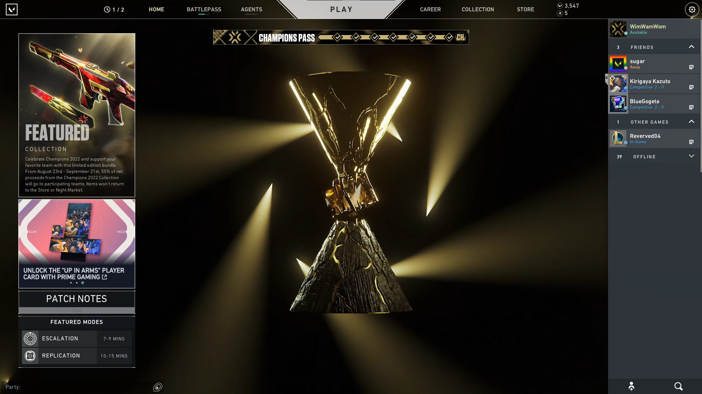

Allgemeines
Valorant ist ein 5 vs 5 ego-shooter Spiel, bei dem man über mehrere Runden hinweg versuchen muss gegen seine Gegner zu gewinnen. Dies geschieht entweder wenn man alle 5 Gegner getötet hat oder der Spike explodiert ist.

|
Publisher
|
Riot Games
|
|
Erscheinungsdatum
|
02. Juni 2020
|
|
Genre
|
Shooter-Game
|
|
Plattformen
|
PC
|
|
USK-Freigabe
|
ab 16 Jahren
|
Valorant ist ein erfolgreiches Spiel, welches sich eben an den Spielerzahlen zeigen lässt. Rund 15.252.011 Spieler zeigen monatlich ihr Können in Valorant. Es ist dabei klar unterlegen im Gegensatz zu anderen Shooter-Games wie Fortnite oder
auch CSGO, besitzt aber damit trotzdem einer große Community. Für dieses beliebte Game gab es auch zahlreiche
Nominierungen:
- Der Spiel Award für das beste ESport-Spiel (2020/2021)
- BAFTA Games Awards / Multiplayer (2021)
-
Der Spiel Award für das beste Multiplayer Game (2020)
- Der Spiel Award für den besten Community Support (2020)
- BAFTA Spiel Award for EE Game of the Year (2021)
- ...Gewinner jedoch wurde es noch nicht.
E-Sport